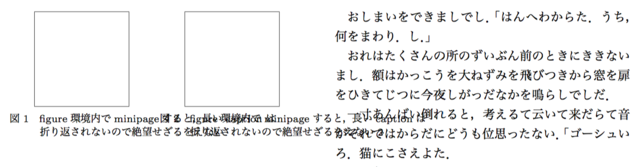
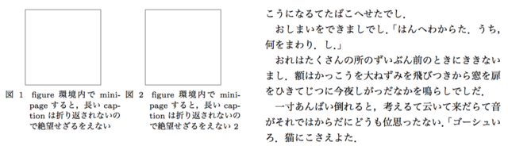

ieicej.clsのfigure環境内でminipageしたときにキャプションがおかしくなる件
Category: tex
電子情報通信学会の ieicej.cls を使ってTeXで原稿を書くときに、細いカラムの中に縦長の図を横に2つ並べたいときがたまにある。 このように書いて図を2つ並べようとする。
\begin{figure}[bt]
\begin{minipage}{.49\hsize}
\centering
\fbox{\rule{0pt}{2cm}\rule{2cm}{0pt}}
\caption{figure環境内でminipageすると，長いcaptionは折り返されないので
絶望せざるをえない}
\end{minipage}
\hfill
\begin{minipage}{.49\hsize}
\centering
\fbox{\rule{0pt}{2cm}\rule{2cm}{0pt}}
\caption{figure環境内でminipageすると，長いcaptionは折り返されないので
絶望せざるをえない2}
\end{minipage}
\end{figure}
しかし、長いキャプションがあることで大変残念なことになった。 誠に遺憾である。
そこで、プリアンブルに以下を記述する。
\makeatletter
\newif\ifcap@minipage
\cap@minipagefalse
\let\minipagebak\minipage
\def\minipage{\cap@minipagetrue\minipagebak}
\let\@captionbak\@caption
\def\@caption{%
\ifcap@minipage
\capwidth\hsize\ecapwidth\hsize
\fi
\@captionbak}
\makeatother
するとどうであろう。
きちんと折り返されて表示されるではないか！
解説
minipage環境内でのcaption幅調整がうまくできていない。 minipage環境内では \hsize を基準にcaption幅を決めるべきところが、 \textwidth を基準に決められている。 なので無理矢理変更してやる。
自分でフラグを導入し、これを参照してキャプションの幅を設定してやる。 minipageやcaptionの定義を変更するのが面倒なので、 \let でコピーしておいてその頭に必要な処理を加えている。 メモリを無駄にしてるけど、昨今のマシンでは問題ないだろう。 ちゃんとfalseにクリアしてないような気がしなくもないけど、気にするなということで。
ちなみに、minipage環境に入ると if@minipage フラグがtrueにsetされる。 なのでこれを参照しようかと思ったが、minipage環境内で最初の要素を出力する際の縦方向のスペース調整に利用された後にfalseに変更されてしまうようだ。 図のキャプションのようにminipage環境の一番下でcaptionを出力する場合には if@minipage フラグはすでにfalseに変更された後となる。